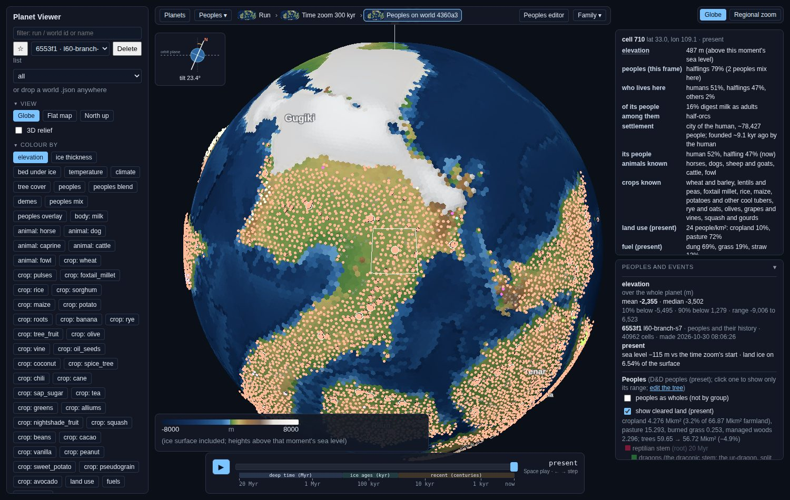
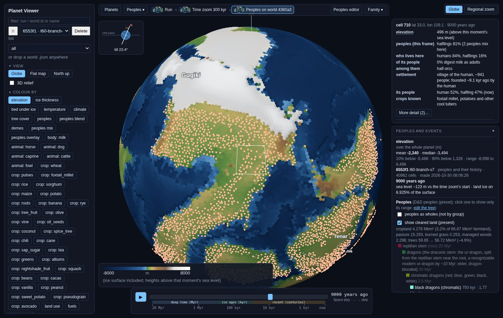
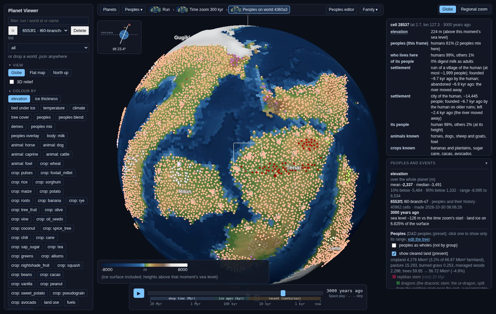
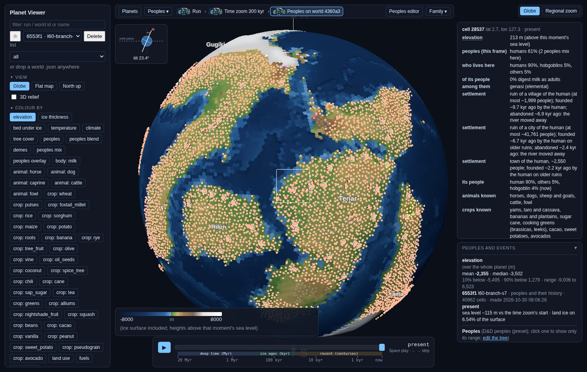
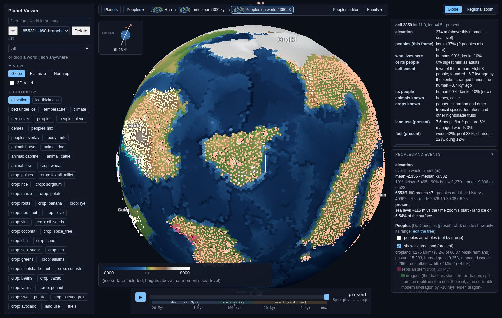
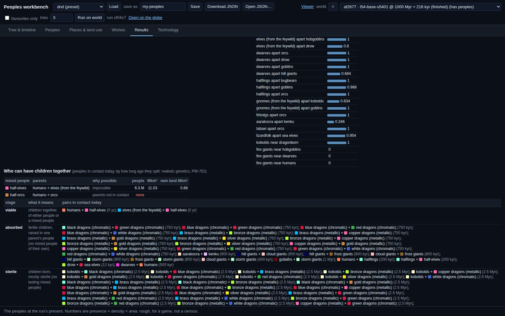
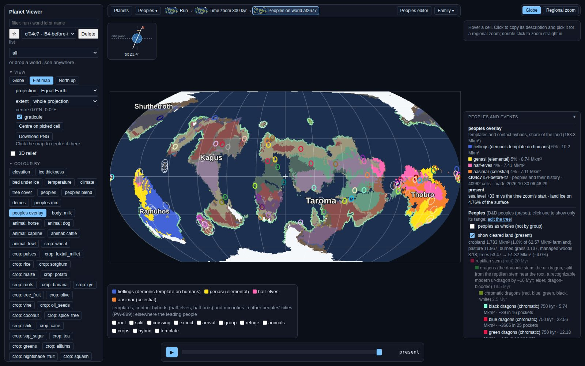
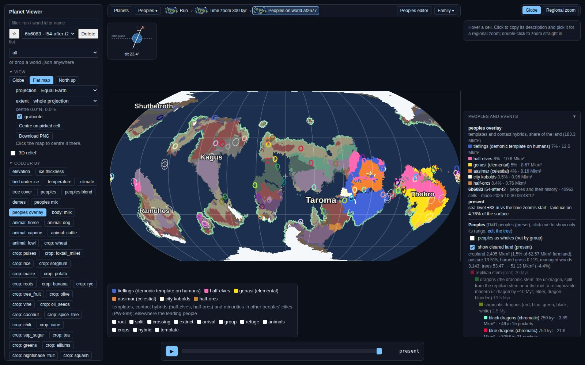
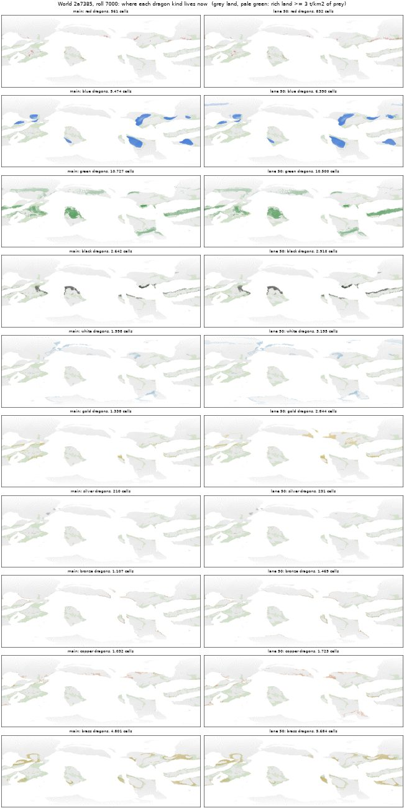

Everything that needs you, in one place. Every decision has an id (D1, D2…), so you can answer as briefly as “D5: yes, D6: settlements, the rest your call”. Below the decisions: pictures worth a look, what your notes from this morning turned into, and what merged overnight.
Each one comes with my recommendation. Saying “your call” on any of them is a fine answer.
Today 4 pairs of neighbouring peoples share an identical colour, 37 pairs look alike to red-green colour-blind eyes, and 7 peoples vanish into the ocean or the empty-land grey. Two fixes are built. The first only keeps neighbours distinct, so red dragons can come out green. The second, “family hues”, colours each family by its own hue: dragons warm and named by their colour, giants blue, fey violet.
See: side-by-sides 1, section A · try &palette=family
Twelve scales (wave power, floods, soil depth and others) get lighter and then darker again, so the least and the most look alike. The proposal keeps their hues but makes brightness run one way only. The regional zoom would also share the globe's temperature, rain and fertility colours.
See: side-by-sides 1, section B · try &ramps=new
The legend floats over the bottom of the globe and covers the map whenever the peoples or event switches are showing.
See: side-by-sides 1, section C · try &legend=dock
Today “Colour by” is one wall of 51–73 buttons. The grouped version has six folding sections, a search box, a row of your last four layers, and dropdowns for crops, animals and body traits.
See: side-by-sides 2 · try &picker=grouped
You said “frozen over” should mean roughly 40%+ of the land under ice. I agree it should be a land share and not only sea level, because today's flag counts ice volume alone. Of the 8 “iceboxes” in the coastline test, 6 were warmer than their own run's start.
One push-back to discuss. By the usual figures, Earth's worst Pleistocene glacial maximum covered roughly a quarter of the land with ice; that number still needs checking against a source, not my memory. If it holds, then by a 40% bar Earth's ice ages never froze over, and the label would only catch near-snowball worlds. That may be exactly what you want, but it's worth deciding on purpose. My proposal is three plain terms:
Ticket PW-1091
You found the dragon paper worthwhile, so it's now the first of a series, an epic of its own (PW-1113). The candidates are below, under Next paper.
Each people's range is cut into regional populations, its “cultures in waiting”. The cut sets how many rows the workbench tree draws, and later perhaps how many languages or dialects there are. On the test world, humans get:
Ticket PW-1015
Herders and foragers now live densely on rich land and thinly on poor land, measured against fixed yardsticks, so a poorer planet holds fewer people. Farmers don't follow productivity yet; good soil already sets where they live.
Ticket PW-1020
The tab kept the old “every people × every tech” grid as a sixth view called “Table”. It also holds the “Firsts” list per track.
Ticket PW-1021 · you may simply say “your call”
Each would follow the dragon paper's bar: standalone and cited from PDFs actually read, with a checker for each source paper, a peer review, a revision and a re-check, and a section on what the model should change. Each needs a new reading list. Your friend's literature fetch was the backbone last time, so I'd send a wishlist of 10–20 PDFs before starting.
| # | Topic | What it would test | Why now |
|---|---|---|---|
| P1 | Settlement sizes through history | The biggest and typical towns and cities by era, rank-size patterns, and when cities appear, against urban archaeology | You asked for era-true sizes (PW-1114); it sets the rules the settlements need. Small and sharp. |
| P2 | How many people the land feeds | Forager, herder and farmer densities and carrying capacity, against ethnography and archaeology | Closest to the culinary north star; it also bears on D8 and on dragon pressure. |
| P3 | Ice ages: how often, how deep, how much land | The planets' ice histories against the paleoclimate record; terms for icehouse, glacial and frozen over | Settles D5 on evidence; the ice loop was just rebuilt. |
| P4 | The pace of civilisation | When peoples domesticate, settle, smelt, write and found cities, against the archaeological record | You flagged the tech tree as a prototype due for a deep rework. This would be its foundation. |
| P5 | Rivers and landforms | Drainage scaling laws, delta and floodplain sizes, waterfalls, against geomorphology | Exercises the zoom, which was just split into stages. |
The worktree folders I pointed you to last night were cleaned up after merging, sorry. All of these are now in main under docs/review/ (settlements/, lineages/kinship-cities/, megafauna/open-niches/).









| You said | Done / where |
|---|---|
| Losing ~99% of dragons in farmland is too fatal for low-tech peoples; early pressure should be very slight. | Agreed, and recorded on PW-1068 (“persecution has no source”). Pressure should come from things that grow with technology and history: weapons, organised hunts, settlement. A flat kill rate per person is wrong. It's first in the fun queue once the settlements follow-ups finish. The paper's numbers describe the current model, which is the point: they show the problem. |
| Was I rate-limited by NOAA? Give me a URL; back the data up. | No action needed. The data is fully rebuilt from NOAA's 2020 rain release, with your OK. As a backup, a read-only copy of all 1.8 GB sits on the other drive at /home/daniel/backups/procgen-earth/2026-10-30/, and its checksums are committed in tools/earth_data.SHA256SUMS, with a restore recipe in docs/coordination.md. I didn't commit the data itself to git: 1.8 GB (and even the ~50 MB of irreplaceable pieces) would bloat every clone forever. Say so if you'd rather have them in git or git-lfs anyway. For reference, the GPCC source is the PSL THREDDS server, psl.noaa.gov/thredds/…/gpcc/full_v2020/. |
| Any people that doesn't usually get along can live in a city if it plays nice; goblinoids cohabiting confirmed. | Recorded on PW-1082. City minorities generalise to any tolerated people once polities exist; kobolds and goblins were only examples. |
| Screenshot folders don't work. | The worktrees were deleted after merging. Paths in main are given above. |
| Frozen over = 40%+ of land. | See D5 for my one push-back and a three-term proposal. |
| Mining sites existed since early metalworking (Yamnaya). | Sent to the settlements lane: mine sites become their own kind of place where a mining people, or known ore plus the mines tech, allows. Built now if cheap, otherwise a ticket. |
| The tech tree is a placeholder; don't fuss over minor tweaks. | Stopped the bread/fermentation timing fix I'd queued; the tree stays as it is until its deep rework. P4 would be that rework's foundation. |
| Dwarf holds / kobold warrens inside human land, even amid enemies. | Being built now. A minority can hold its own place in a cell even where it's hated, for example dwarves under a mountain in orc country. |
| Village / town / city sizes should follow real-world sizes by era. | Ticketed as PW-1114, and the recommended next paper (P1). |
Running now: the Antarctic-summer fix (its 18-planet test), and the settlements follow-ups (fixing the dot carpet, minority holds, mines, towns in the brief).